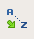
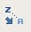
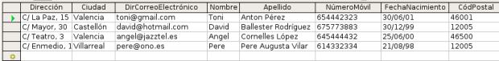
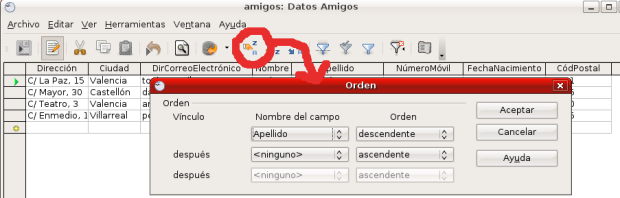

Por defecto, cada vez que abrimos una tabla ésta mostrará los registros en el orden en que se han introducido. Sin embargo, podemos hacer que los registros se ordenen de forma creciente o descendiente en función de cualquiera de los campos de la tabla.
- Con la tabla listadoAmigos de la base de datos Amigos haz clic sobre el nombre del campo por el que quieres que se ordenen los registros, por ejemplo apellido. Después de marcarlo, aparecerá seleccionada la columna correspondiente.
- A continuación haz clic sobre el botón de ordenación automática en orden ascendente  o en el botón de ordenación automática en orden descendente  según necesites.
- Automáticamente aparecerá la tabla con los registros ordenados como muestra la figura siguiente.

Pero aún podemos hacer una ordenación más sofisticada basada en la ordenación sucesiva de hasta tres campos, como se puede observar en la siguiente figura.
